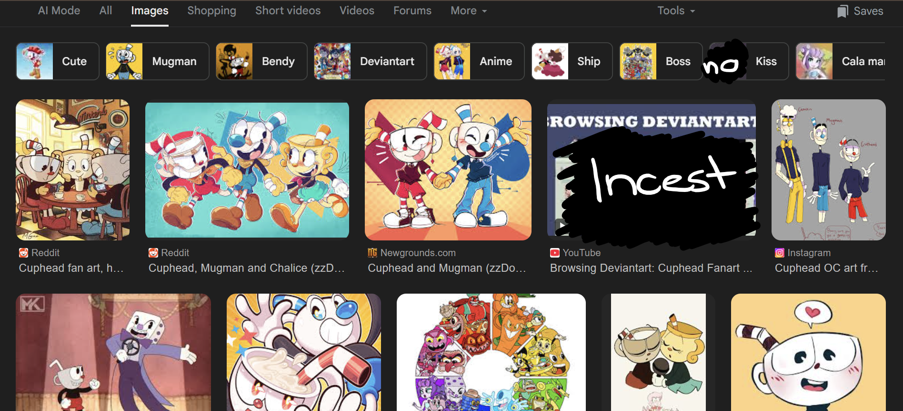
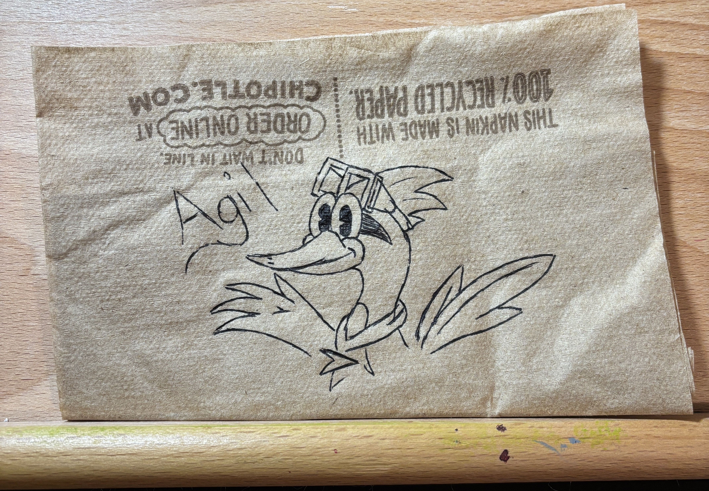
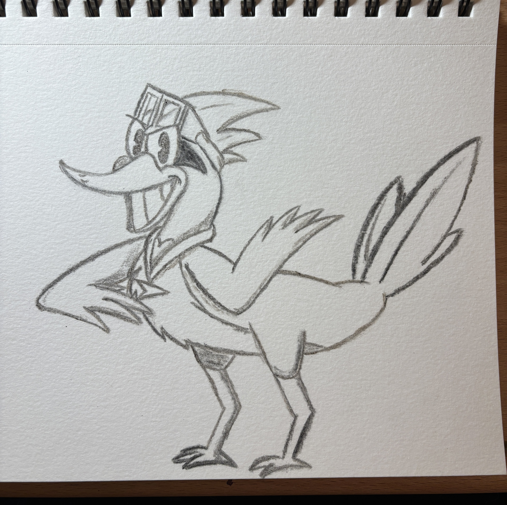

Before the era of AI Art taking the internet by storm, it was extremely common for artists to flock to a social media platform and post their art to the world, hopefully gaining an audience their art is targeted for. What made these artists special was what their art was. Art to artists is how they present themselves, how they show emotion, and how talented they can really be.
The Artist can be known for anything, but the second people see their work, they know it's associated with them. Certain styles is what made artists recognizable and unique to the other artists out there. Art on the internet is very mixed depending on the platform you are looking on. DeviantArt is an example of how a simple art sharing platform gained a heinous reputation from the amount of artists that would take "limitless creativity" to a whole new level. Art is a form of expressionism, so when artists take the things they like and draw them doing things they like, their hope is to show the internet and find people of similar tastes. However, in DeviantArt's case, this platform was heavily used by Artists to post pictures they made of fetishes they enjoy
Funnily enough, one of my favorite video games has a horrible online reputation Artists who made fanart of the game. The game in question is Cuphead, a game known for being hand-drawn and in a 1930s cartoon style. When this game was released in late 2017, Artists immediatley fell in love with how stunning this game looked. Not everything on the internet is innocent though, as a silly little game about a cartoon cup that looks like Mickey Mouse, has one of the most criminal searches for "Cuphead Fanart" on the internet. There are much worse fandoms out there, but the point is just to show both sides of internet Artists.

When AI Art was first discovered by the internet, it was immediately recieved with mixed emotions, people loved how convinient and fast they were able to create new drawings, and people hated it for taking away what art was known for in the first place, creativity. Anyone can use AI Art and get results in an instant, but human creation allows for details that go beyond a computer. One of the most argued factors when it comes to Human art vs. AI art, is acessibility. Many people who use AI for art claim "Art materials are too expensive" and while, yes, art materials can be expensive, you can make art with quite literally anything, it's up to you on how you use your creativity. As a rebuttal to this claim, I went ahead and drew a character I made in 2020 for a comic series, Agil Kilometer the Roadrunner. His main inspiration was more on an actual roadrunner rather than The Roadrunner from Looney Tunes, as I draw in a cartoon-looking style all the time.
The mediums used are something you can find lying around your house as I used both the paper and pencil as something under a dollar. For the first example, I found a napkin in my car from Chipotle, I can't remeber how long this napkin has been sitting in my car, but it was crusty and perfect to draw on. Chipotle napkins are free for anyone to take, so the paper wasn't the issue, but what about the pen used? I found a pen in my backpack that has been there since I started college in 2023, the pen is roughly 97 cents at Walmart.

What if I don't want to make art on a crusty napkin because I intend on hanging it on the wall or keeping it for long? How about using a medium on paper that also is very cheap to obtain. Using a sketchbook I had for years I went ahead and drew Agil again using lit matchsticks. Matchsticks were also 97 cents at Walmart and were in bulk. I got 320 matchsticks and only used about 5-6 for the drawing. I also didn't have to make art this way, I could've taken the matchsticks and aligned them to create Agil that way too, but using the burnt matchsticks gave a similar effect to pencil graphite.

Art takes time and effort in order to master, no one is born naturally talented at art, which is why one of the most common phrases to tell someone who wants to get better at art is "Practice makes perfect." I came up with Agil five years ago and still have multiple changes to him all the time. Eventually he gets to a point where he looks a lot better from the first design I made of him. Constantly drawing Agil over and over is how I got better. Using AI over taking the time to draw is cutting unessesary corners. Most AI usage with art also comes from the typical, "I can't draw well" or "It takes too much time."
To those arguments I have rebuttals for as well, even if one seems strange. Art is a skill that takes time to develope, of course, not everyone is good from the start, but the reason those Artists have good art now is because of the time they took to practice, the constant repetition. To Artists, making art is like clockwork, and they once were in a similar situation as well where they thouhgt they couldn't do it, but they proved themselves wrong and learned how to become better. Using a machine to do things for you gives no repetition or development, it's just a quick way to push away something you could've never known how well you could do art. All art doesn't have to be "good", if it makes you happy, why does it matter what others think? All artists have a style, and having a machine do that for you never gives you the opportunity to find that out. It's only taking away from your own creativity. A prompt in a Chatbot really is that powerful on a human.
For the "it takes too much time" everything takes time, there's not one thing in this world that isn't time consuming. Artists always take the time to draw as it's how they communicate or escape from reality for awhile, the same thing others do with video games and social media scrolling. Sometimes there's events in a person's life where using AI might seem ideal, like a traumatic injury, but that's what I feel makes me unique compared to other Artists. I've been drawing for over a decade and just around teh middle of 2022, a major event would happen to me that would essentially put dropping art on the line. I developed mild to severe nerve pain around my wrist on my dominant hand, the answer is still unclear on what all of this is, but it does make drawing for a long time rather painful. Ever since I heard AI could be used to generate art, I frowned, something I loved doing is being replaced by machines? I've refused to use AI generators as anyone can do art, even if it hurts to do it, I'd rather take the time to slowly go through a drawing and be proud of what I made rather than typing a prompt into a generator and sitting there for five minutes only to get a result that makes me disappointed.
Thus, AI has improved with generative art, multiple users have trained AI to give drawings that look passable as human. And the internet became severely divided just from a prompt or two.